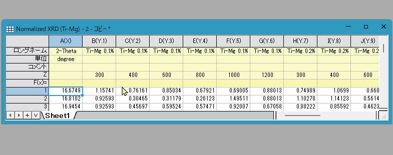

FAQ-474 統合されたセルのテキストを編集して書式設定するには?
Customize-Text-in-MergedCells
最終更新日：2026/2/2
Originでは、任意のワークシート領域(ヘッダー行とデータ領域の両方)で隣接するセルを統合する2つの方法が提供されています。内容を編集または書式設定するとき、各方法はわずかに異なる動作をします。
- ダイナミック統合
- セルのブロックが選択されているときに、ミニツールバーのダイナミック統合ボタンをクリックします。
または
- メニューからフォーマット：ワークシートの表示属性を選択し、ワークシートプロパティダイアログボックスを開きます。フォーマットタブで、適用先を行ヘッダまたはデータに、ダイナミック統合を（水平、垂直、または両方）に設定します。ダイナミック統合する領域をマウスで選択し、右クリックしてセルのフォーマットを選択し、ダイナミック統合を設定することもできます。
- セルをダイナミック統合すると、個々のセルは元の内容を保持し続けます。統合されたブロックを1回クリックすると、ブロック全体が選択されます。直接入力して、すべてのセルを一度に上書きできるようになっています（またはダブルクリックして編集モードを使用します）。
- ブロックを2回クリックすると、個々のセルが選択されます。これで単一セルを編集できます（またはダブルクリックして編集モードを使用します）。アクティブセルを変更すると統合が中断されることに注意してください。

- 静的統合
- マージする領域を選択し、スタイルツールバーのセルの統合ボタン
 をクリックします。
をクリックします。
- この統合方法により、左上のセルの内容のみが表示され、個々のセルは元の内容を保持します。統合されたブロックを（シングルクリックまたはダブルクリックで）選択して編集すると、最初のセルのみが変更されます。
- ブロック内のすべてのセルを更新するには、セルの統合ボタンを再度クリックしてブロックを統合解除する必要があります。その後領域全体を選択し、新しいテキストを入力してCtrl + Enterキーを押します。選択したすべてのセル内容が修正されます。それらを再び統合します。
キーワード:オートフィル、ダイナミック統合、結合、ワークシート、行、ラベル、単位